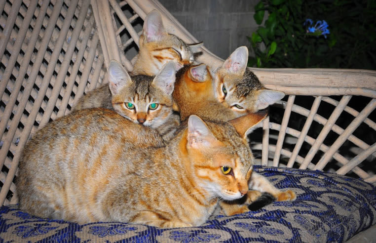
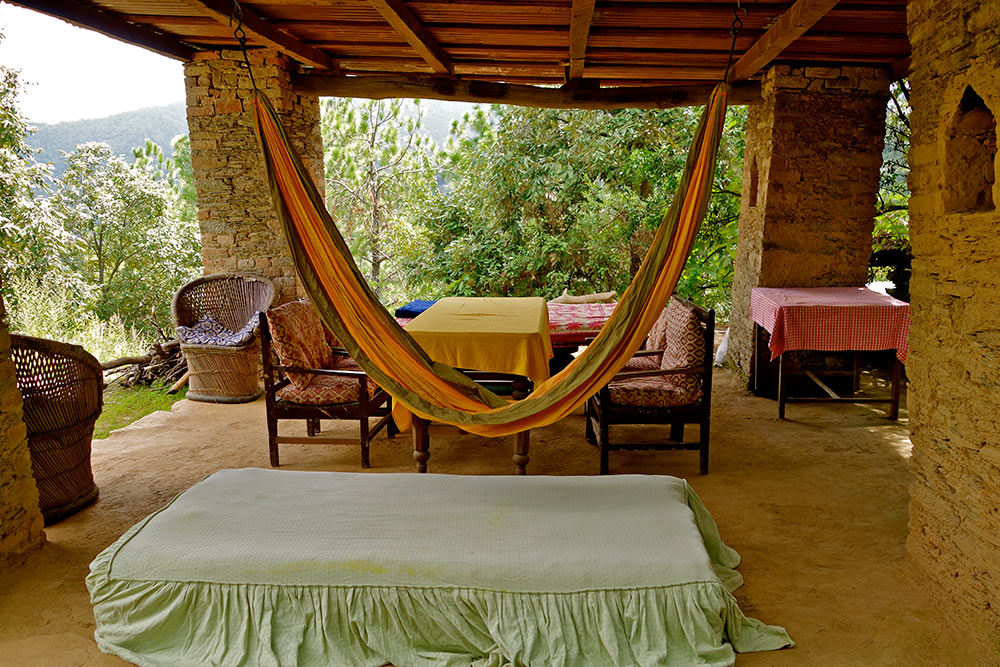

“A hearty welcome to our humble abode in the Himalayas! We offer you solitude at our pristine farming and forest estate, breath-taking sunrises and sunsets, views of snow-capped peaks on clear days, and a chance to be part of our family’s royal Kumaoni and Burmese heritage.”
~ Lat, Julia and Aunty Kiran, hosts at Innisfree Forest Estate in Nathuakhan
Please email us at untravel@indiauntravelled.com to plan and book your travels.
Overview
Innisfree Forest Estate is the mountain home of Lat and his elder brother Dway - descendants of Kumaon’s royal Chand Dynasty and a Burmese princess. Together with Lat’s Latvian wife Julia and their mother Aunty Kiran, they warmly welcome travellers into their home and lives. This is a family full of love, laughter and stories of the days of yore. And their house is the abode of spectacular mountain sunrises and sunsets, and breath-taking views of the snow-hooded Himalayas on clear days. Perfect for solitude seekers, solo travellers, writers, artists, and anyone looking for tranquillity, inspiring vistas, long walks, and lots of good food and conversation.
Named after a poem by the Irish poet WB Yeats, Innisfree is located in the picturesque little mountain town of Nathuakhan, a 2.5 hour drive from the nearest railway station at Kathgodam. Lose yourself amidst acres of deodar and oak forests, feast on fresh produce from the estate’s own organic farm, join your charming hostess for a walk through postcard mountain villages and valleys all the way to Mukteshwar, while away time gazing at the sheer beauty of the Himalayas, chat with the friendly locals, experiment with fusion recipes in the host kitchen or prepare your own food in your outdoor farm kitchenette, stargaze on clear dark nights, dine with fellow travellers, and let the family regale you with stories of mountain living!
Please email us at untravel@indiauntravelled.com to plan and book your travels.
- Colors of sunset, as seen from the homestay
- Innisfree - Your abode in the Kumaon Himalayas
- Lose yourself in the oak and deodar forests in your backyard
- Solitude in the mountains
- Sometimes all you need is time and a gorgeous view to get your thoughts together
- Walk into another world
 When it's time for high tea
When it's time for high tea
{kind=link}
{kind=link}
{kind=link}
{kind=link}
{kind=link}
{kind=link}
Stay
The family house at Innisfree Forest Estate was built more than two decades ago with recycled stone and wood, and blends in perfectly with the surrounding forests and mountains. Three double rooms are on offer to travellers in the family house – simple, cozy, aesthetic, airy, with modern amenities – a chance to mingle closely with the family while having your own space.
An independent farm cottage stands amid the vegetable farm, a 10-minute walk downhill from the main house, offering adventurous families and couples their own private retreat in the wilderness. It comes equipped with a double bedroom, a small indoor kitchenette, an open-air kitchen, and an exclusive bathroom a few feet away. Running cold water is available, and an old fashioned hamam can be used to heat water. To join the family for meals, you must walk up to the main house. Best suited for young couples, long term rentals and those looking for complete solitude in the mountains.
Whether you stay in the family house or your independent farm cottage, you are welcome to have your meals with the host family on the long wooden dining table, enjoy high tea with sunsets in the verandah, and lose yourself amid the old books of the quaint little library.
You wake up to the sweet chirping of birds, gorgeous views of the surrounding mountains, and endless possibilities of the adventures the mountains might lead you to.
Please email us at untravel@indiauntravelled.com to plan and book your travels.
- Overview of the estate
- The family house
- The detached bathroom of the farm cottage- Photo by Sameer Bhatt
- The independent farm cottage. Photo by Sameer Bhatt.
- Cosy rooms in the family house
- Cozy interiors of the farm cottage
- Bedroom in the independent cottage
- Traditonal bathrooms with modern amenities
- Attic for the young and young at heart in the indepedent cottage
- Loving cats at home! Photo by Sameer Bhatt.
- Farm cottage sitout overlooking the forest
- Outdoor kitchen of the farm cottage for cooking
- View from the verandah of the family house
- View from the main house. Photo by Sameer Bhatt
- Winter cherry blossoms in bloom at Innisfree
- Rustic bathroom - equipped with running water, western style loo...
- Small kitchenette and dining area in the farm cottage
- Small kitchenette in the independent cottage
{kind=link}
{kind=link}
{kind=link}
{kind=link}
{kind=link}
{kind=link}
{kind=link}
{kind=link}
{kind=link}
{kind=link}
{kind=link}
{kind=link}
{kind=link}
{kind=link}
{kind=link}
{kind=link}
Food & Drinks
The host kitchen serves up farm-to-table food from the estate’s own organic farm. You can feast on milk, butter, cottage cheese and yoghurt from the farm cows, home-made jams and fruit-stuffed pancakes from the fruit orchard, eggs made to order, local Pahari and fusion dishes made with veggies and herbs grown on the farm, and mouth-watering deserts that have travelled all the way from Latvia with Julia!
Your (filtered) drinking water comes straight from a mountain spring.
Please email us at untravel@indiauntravelled.com to plan and book your travels.
{kind=link}
{kind=link}
{kind=link}
{kind=link}
{kind=link}
{kind=link}
Activities
Nathuakhan is the perfect place to while away time reading, writing, thinking, laying on a hammock, and catching up on things you love to do and never get time for, in the inspiring backdrop of the mountains. You can go on long walks through the terraced hills, discover timeless villages, photograph picturesque valleys, see panoramic views of the snow-capped Himalayas on half-day hikes and longer treks, shop for handmade chocolates and handicrafts in Mukteshwar and Sitla, help out with farming chores on the estate, and spend time chatting with the friendly locals.
Activities at and around the homestay include:
- Farm and forest walk
- Birdwatching
- Guided hikes to Sitla and Mukteshwar
- Farming activities (milking cows, feeding the chicken, daily farm work)
- Browse through old books at the library
- Bonfire on chilly nights
- Yoga
- Baking / desert making lessons (think Latvian dishes)
- Village and temple walks
- Badminton
- Day trip to Binsar Wildlife Sanctuary
- Day trip to surrounding hill stations – Mukteshwar, Almora, etc.
Please email us at untravel@indiauntravelled.com to plan and book your travels.
- Timeless books in the quaint little library
- Whiling away a beautiful day
- Ancient temple walk
- Colors of sunset
 Colors of the house
Colors of the house- Forest walk
- Inspiring views to write
- Lounge area to read, write, soak in the natural beauty
- Somewhere in the valleys of Kumaon
 The sky's a painting
The sky's a painting
{kind=link}
{kind=link}
{kind=link}
{kind=link}
{kind=link}
{kind=link}
{kind=link}
{kind=link}
Costs
This homestay is currently not accepting any bookings. Apologies for the inconvenience.
Please email us at untravel@indiauntravelled.com to plan and book your travels.
Location
Nathuakhan is located a scenic 2.5-hour drive from Kathgodam, the nearest railway station. The popular hill station of Mukteshwar is a short drive away. The nearest domestic and international airport is in Delhi.
Best time to visit
- All year round.
- Summer / Spring / Autumn (March to June and September to November): Pleasant, sunny days, cool nights, clear sunsets, lots of greenery.
- Winter (November to March): Cold, spectacular views of the snow-capped Himalayas, snowfall if you're lucky!
- Monsoon (July – August): Heavy downpours, spectacular greenery and sunsets.
Things to note
- Fitness: The homestay is a perfect getaway for people of all ages and fitness levels – you can make your stay as relaxing or as active as you like.
- Cash and ATMs: Only cash is accepted at the homestay. The nearest ATMs are in the towns of Talla Ramgarh (15 min drive) or Mukteshwar (30 min drive).
- Bathrooms: Each room comes with an attached bathroom, fitted with hot water geysers, showers and western style toilets.
- Electricity: Like in most mountain regions in India, power cuts can happen. Please carry torches and spare batteries as needed.
- Phone, Internet and TV: There are no TVs in the rooms, but there is plenty of natural beauty to keep you entertained. Most phone networks work well here and Wifi is available in the main house.
- Pets: Not allowed. The family has several pet dogs and cats!
- Alcohol: Not provided. Guests can carry their own. Soda / soft drinks can be provided on request and are chargeable. Ice cubes can be provided.
- Driver’s Accommodation: Drivers are not permitted to sleep in the car on the homestay premises. Driver accommodation and food can be arranged nearby at additional cost on prior notice.
Checklist
Many of us have pre-conceived notions about rural India. Leave them behind, travel with an open mind, and you'll be pleasantly surprised with what you find.
- Sunscreen, sunhat
- Walking shoes
- Warm jacket, woolen cap, gloves in winter
- Umbrella, raincoat in the rainy season
- Insect repellant if you are prone to mosquito bites
- Books to read and write, stationery to paint and draw - anything you love to do and never get the time for
- Binoculars for bird watching
- Cosmetics you need
- Prescription medicines, if any
- Camera and batteries / charger
Please email us at untravel@indiauntravelled.com to plan and book your travels.
Photo Gallery
- Colors of sunset, as seen from the homestay
- Innisfree - Your abode in the Kumaon Himalayas
- Lose yourself in the oak and deodar forests in your backyard
- Solitude in the mountains
- Sometimes all you need is time and a gorgeous view to get your thoughts together
- Walk into another world
- When it's time for high tea
- Overview of the estate
- The family house
- The detached bathroom of the farm cottage- Photo by Sameer Bhatt
- The independent farm cottage. Photo by Sameer Bhatt.
- Cosy rooms in the family house
- Cozy interiors of the farm cottage
- Bedroom in the independent cottage
- Traditonal bathrooms with modern amenities
- Attic for the young and young at heart in the indepedent cottage
- Loving cats at home! Photo by Sameer Bhatt.
- Farm cottage sitout overlooking the forest
- Outdoor kitchen of the farm cottage for cooking
- View from the verandah of the family house
- View from the main house. Photo by Sameer Bhatt
- Winter cherry blossoms in bloom at Innisfree
- Rustic bathroom - equipped with running water, western style loo...
- Small kitchenette and dining area in the farm cottage
- Small kitchenette in the independent cottage
- Breakfast is a heart affair - stuffed pancakes, free range eggs, homemade jams and more
- Pahari dishes for dinner
- A giant cucumber!
- Cabbage in the farm
- Corn ready to be eaten
- Timeless books in the quaint little library
- Whiling away a beautiful day
- Ancient temple walk
- Colors of sunset
- Colors of the house
- Forest walk
- Inspiring views to write
- Lounge area to read, write, soak in the natural beauty
- Somewhere in the valleys of Kumaon
- The sky's a painting
Please email us at untravel@indiauntravelled.com to plan and book your travels.
Reviews
“TWe are parents of a two year old, have travelled and camped a lot in india and since we had a baby, we travel every 2months nearly. Our little boy loves it. So we went to this gorgeous place called innsfree in Nathua khan ( Uttaranchal ). It's been the best homestay till date, Julia is a fantastic host. We stayed at the cottage away from the main house right on the hill farm with our own fire place, and looking out from the cottage was just the hills and clouds and sky and greens (no construction at all) - that was always my dream location.The food was awesome, think I would have gained a few kilos if it wasn't for our walks :). Highly recommend innsfree to people who want to get away from the crowds.”
~ Shweta, travelled with her family in October 2014.
“Thanks very much for everything. Innisfree was great; we liked the overall experience a lot.
Pros:
The farm is terrific; the cottage is particularly excellent; amenities like linen, cutlery, kitchenware all thoughtfully placed
The dinner, lunch and breakfast spreads were generous and sumptuous - arguably unlike any other place in this segment. Julia and Layt are very engaging and attentive hosts.
A couple of things to look out for:
It is worth disclosing at the outset that the double rooms are literally a homestay i.e. one shares the roof with the hosts - which guests may not anticipate at the time of booking.
Worth also telling guests beforehand about the number of dogs. We like dogs and thus had no problem with them; others may not be.
All told, it's a place well-worth visiting particularly for families. It will do seriously well as time goes by.”
~ Sushil Aaron, travelled with friends in October 2014.
To feature your review / testimonial, please write to untravel@indiauntravelled.com.
Please email us at untravel@indiauntravelled.com to plan and book your travels.
Responsible Travel
Lat, Julia and Aunty Kiran make all efforts to blend in with their pristine surroundings. They have preserved the oak and deodar forests in their backyard for decades, and built the family home and the farm cottage entirely with recycled or locally sourced stone and wood. The organic farm on the estate uses minimal pesticides and no chemicals, growing everything from vegetables and fruits to herbs, and supplies most of the food served to travellers; the rest is sourced from local growers.
Wastage is minimized; biodegradable waste is used to make compost for the organic farm, while non-biodegradable waste is recycled as much as possible.
Below are some tips to travel responsibly while in Nathuakhan:
- Carry a good water bottle. Filtered water from the mountain spring is available at the house for refilling your bottle. Refrain from buying numerous plastic mineral water bottles.
- Pack your bags with environmentally friendly things. Carry as little plastic as possible.
- Do not litter or leave behind any non-biodegradable waste. Carry it to the cities where better waste management systems are in place.
- What you wear has an impact. Dress appropriately, especially when you walk into the villages.
- Respect the local culture and refrain from physical intimacy in public places.
- Experiment with local and fusion food served from the host kitchen, or prepare your own in your farm cottage’s kitchenette. Ask for modifications in the food according to your taste, instead of wasting it.
- Avoid excessive consumption of alcohol, especially in public places.
- Seek permission before photographing people, so as to respect their privacy.
- Please do not pluck any plants and flowers, and do not disturb the wildlife.
Please email us at untravel@indiauntravelled.com to plan and book your travels.
Please email us at untravel@indiauntravelled.com to plan and book your travels.